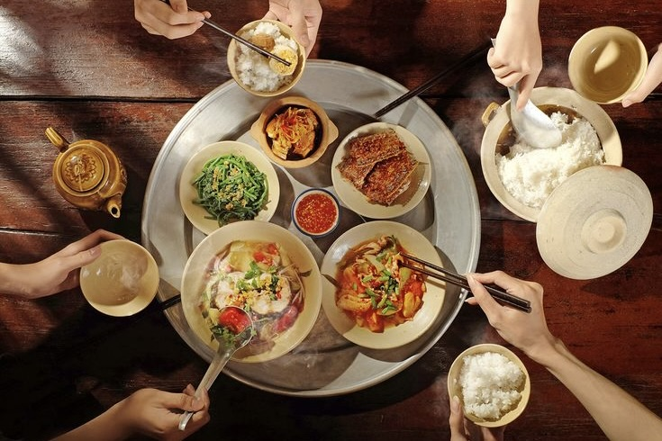
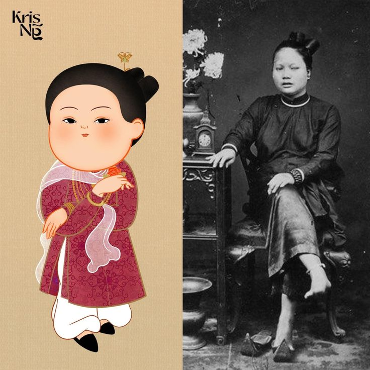
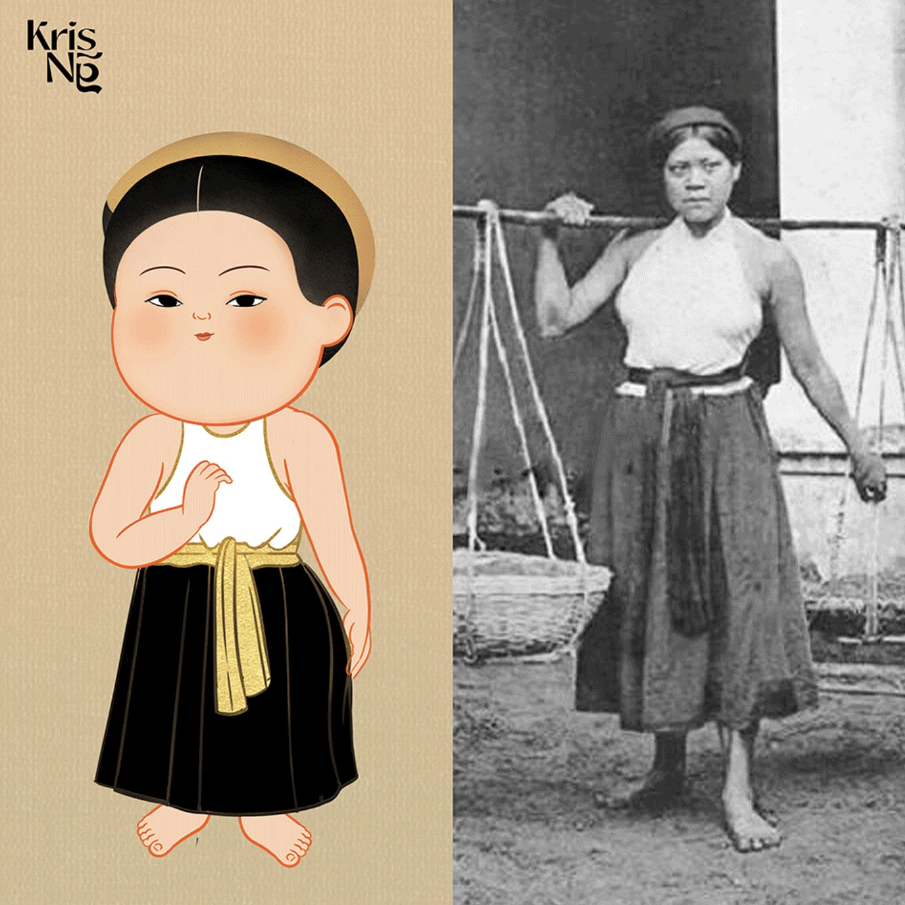

Vietnam, a captivating Southeast Asian nation, invites you to discover its rich tapestry of culture, history, and natural beauty.
With a population exceeding 97 million, Vietnam's people exude warmth and hospitality, creating a welcoming atmosphere for visitors.
From the bustling streets of Hanoi, the capital city, to the vibrant energy of Ho Chi Minh City, modern life seamlessly merges with ancient traditions.
Steeped in a history marked by resilience and transformation, Vietnam showcases its journey from ancient kingdoms to colonial influences and a vibrant present.
The country's landscapes are equally enchanting, from the terraced rice fields of Sapa to the breathtaking limestone formations of Ha Long Bay.
Vietnamese cuisine is renowned globally for its bold flavors and fresh ingredients.
Delight in the iconic flavors of pho, banh mi, and spring rolls as you embark on a culinary adventure that reflects the nation's soul.
As you explore Vietnam, you'll encounter a harmonious blend of tradition and progress, where historical landmarks stand alongside modern developments.
Whether you're navigating bustling markets, serene temples, or bustling cities,
Vietnam offers an immersive experience that captures the heart and imagination,
leaving an indelible mark on all who journey through its diverse and captivating landscapes.
"Vietnam Unveiled: Landscapes, Traditions, and Beyond"
1. Vietnamese people
Vietnamese people are a tapestry of warmth, resilience, and cultural richness.
With a strong sense of community, they welcome visitors with open arms, sharing their traditions and stories.
Rooted in a history of overcoming challenges, Vietnamese individuals exude a remarkable spirit that reflects their enduring strength.
From bustling city streets to serene villages, their daily lives are a reflection of deep-rooted values and traditions.
Whether savoring the flavors of local cuisine or engaging in heartfelt conversations,
interacting with Vietnamese people offers a genuine and heartwarming glimpse into the heart and soul of this captivating nation.

2. Vietnamese's food
Vietnamese cuisine is a captivating symphony of flavors,
celebrated for its fresh ingredients and harmonious balance.
From the iconic pho, a soul-warming noodle soup, to the irresistible banh mi,
a fusion of French and Vietnamese culinary artistry, every dish tells a story.
Vibrant herbs, delicate spices, and meticulous preparation transform ingredients into exquisite masterpieces that tantalize the palate.
The vibrant street food culture further entices with savory spring rolls, aromatic grilled meats, and delectable sweet treats.
With its rich history and diverse influences,
Vietnamese food is a culinary journey that captures the heart and leaves an indelible mark on every gastronomic adventure.
3. Lotus
The Vietnamese lotus, revered as a symbol of purity and enlightenment,
holds a special place in the country's cultural tapestry.
Rising elegantly from muddy waters, the lotus embodies resilience and beauty amid adversity.
Its delicate petals and enchanting fragrance have inspired poets, artists, and spiritual seekers for generations.
In Vietnamese folklore and art, the lotus is a timeless motif, representing grace, strength, and spiritual awakening.
Beyond its symbolic significance, the lotus is an integral part of Vietnamese cuisine and daily life, with its seeds, stems,
and flowers being used in various culinary and medicinal applications. The Vietnamese lotus encapsulates the nation's ethos,
reflecting a harmonious blend of nature, tradition, and spirituality.
4. Non La
The Vietnamese Non La, often called a "conical hat",
is an iconic symbol of Vietnam's culture and heritage.
This unique and elegant hat, crafted from palm leaves, has been worn by generations of Vietnamese people,
providing shelter from the sun and rain while exuding a timeless charm.
The Non La embodies the grace and resilience of Vietnam,
reflecting its deep connection to rural traditions and the natural world.
With its gently sloping form and intricate craftsmanship, the Non La stands as a symbol of both practicality and beauty,
encapsulating the essence of Vietnamese life and adding a touch of tradition to the modern world.
5. Vietnamese's landscapes
Vietnam's landscapes paint an awe-inspiring picture of natural beauty.
From the emerald terraced rice fields that ripple across the hills of Sapa to the ethereal limestone formations that grace the waters of Ha Long Bay,
each scene is a masterpiece.
The lush Mekong Delta's intricate waterways and the serene beaches of Phu Quoc Island offer tranquil escapes,
while the vibrant chaos of Hanoi's Old Quarter immerses you in urban energy.
The country's diverse terrain, with its cascading waterfalls, mist-covered mountains,
and pristine coastlines, creates a kaleidoscope of visuals that captivate the soul and ignite a sense of wonder.
6. Vietnamese's flag
The Vietnamese flag, proudly known as the "Red Flag with Yellow Star",
encapsulates the nation's history and aspirations.
Its bold red background symbolizes the sacrifices made for independence and the determination to forge a unified identity.
At its heart shines a radiant yellow star, representing the Vietnamese people's resilience,
unity, and hope. This iconic flag serves as a powerful emblem of Vietnam's rich heritage, unwavering spirit,
and enduring quest for a brighter future.
Vietnamese's traditional costumes
Vietnam is adorned with a diverse array of traditional costumes that eloquently express the country's cultural depth and heritage.
The iconic "Ao Dai" encapsulates Vietnamese elegance,
a flowing tunic paired with trousers, embodying grace and sophistication.
The "Non La", or conical hat, is a symbol of rural life and sun protection, worn ubiquitously.
For men, the "Ao Gam" is a resplendent silk tunic reserved for ceremonial occasions,
adorned with intricate motifs and embroidery.
In contrast, the "Ao Ba Ba" is a more casual attire, reflecting the rustic charm of southern Vietnam.
Vietnam's ethnic diversity is magnificently reflected in costumes like the elaborate and colorful garments of the Hmong people.
The Cham community dons unique outfits adorned with exquisite jewelry, reflecting their distinct heritage.
The "Ao Tu Than" and "Ao Nhat Ban" are celebrated vestiges of history,
with the former representing traditional elegance, and the latter showcasing a fusion of Vietnamese and Japanese styles.
These costumes are not merely fabric and design;
they encapsulate narratives of tradition, identity,
and artistic finesse, weaving a rich tapestry of Vietnam's cultural legacy.


Vietnamese national heroes
Vietnamese national heroes are individuals who have
demonstrated exceptional contributions to the preservation and progress of the Vietnamese nation.
Revered by the people as heroic figures, these individuals have played significant roles in
Vietnam's historical development and are recorded in the annals of the nation's history.
Their actions and sacrifices have left an indelible mark on the collective consciousness of the Vietnamese people,
inspiring a sense of patriotism and pride.
Ngo Quyen
General Ngo Quyen holds a significant place in Vietnamese history as a notable military leader and strategist.
He achieved a pivotal victory in 938 AD at the Battle of Bach Dang River,
which marked a turning point in Vietnam's fight against Chinese domination.
Ngo Quyen's ingenious use of submerged stakes to immobilize the enemy fleet showcased his tactical
brilliance and determination to secure Vietnamese sovereignty. His triumph at Bach Dang River paved
the way for a period of self-rule and strengthened the foundation of an independent Vietnam.
Ho Chi Minh
Ho Chi Minh, a prominent figure in Vietnamese history,
served as the President of North Vietnam from 1945 to 1969.
He played a crucial role in leading the country's struggle for independence against colonial powers,
particularly the French and later the United States during the Vietnam War.
Ho Chi Minh was not only a revolutionary leader but also a key architect in shaping the modern Vietnamese nation.
His dedication to the cause of independence and his leadership left a lasting impact on the course of Vietnamese history.
Hai Ba Trung
Generals Hai Ba Trung, often referred to as the Trung Sisters,
are revered figures in Vietnamese history for their fearless leadership and valiant resistance against Chinese rule.
In the first century AD, Trung Trac and Trung Nhi led a successful uprising that briefly restored Vietnamese autonomy.
Their unwavering determination, along with their ability to rally local support,
resulted in a significant challenge to foreign domination.
The Trung Sisters' legacy symbolizes the spirit of Vietnamese independence
and serves as an enduring source of inspiration for generations to come.
Title: The Triumph of Ngo Quyen
In the heart of ancient Vietnam, where legends intertwined with reality, there lived a courageous warrior named Ngo Quyen. The land was oppressed under the rule of the foreign forces, and the people yearned for freedom like a caged bird yearns for the open sky.
Ngo Quyen, a man of unwavering determination and indomitable spirit, saw the suffering of his fellow countrymen and decided that he would be the spark that ignites the flames of liberation. With a heart full of resolve and a mind sharpened by experience, he began to gather like-minded individuals who shared his dream of a free and independent Vietnam.
His plan was audacious: to challenge the oppressive regime on the water, where the foreign forces felt most secure. Ngo Quyen knew that the element of surprise would be his greatest ally. With the help of his loyal companions, he meticulously devised a strategy that would catch the enemy off guard.
On a misty morning, as the first light of dawn painted the sky with hues of orange and gold, Ngo Quyen and his band of brave warriors set sail on a fleet of small boats, ready to confront the imposing enemy ships that had ruled their waters for far too long. As they approached the battle scene, hearts raced and palms sweated, but there was no turning back now.
The battle was fierce and unrelenting. Ngo Quyen's forces fought valiantly, using their knowledge of the waters and their determination to overcome the seemingly insurmountable odds. With every strike of their weapons, they carved a path towards victory, drawing closer and closer to the enemy ships.
In a moment of pure courage, Ngo Quyen leaped from his boat onto the deck of the enemy flagship, his blade gleaming in the sunlight. His presence was a beacon of hope for his comrades, and they rallied behind him with renewed vigor. The battle reached its climax, and the waters turned crimson as victory hung in the balance.
And then, as if guided by the spirits of the land itself, a gust of wind blew across the water, pushing the enemy ships towards the shore. Caught off guard, the foreign forces were unable to regain control, and Ngo Quyen's forces seized the opportunity. With a final, decisive strike, they emerged triumphant.
The cheers of victory echoed through the land, a testament to the unwavering spirit of Ngo Quyen and his comrades. The people rejoiced, and a sense of newfound freedom enveloped the land like a warm embrace. Ngo Quyen had achieved the impossible, proving that even in the face of overwhelming odds, the power of determination and unity could overcome even the mightiest of foes.
And so, the legend of Ngo Quyen lived on, a reminder that the pursuit of freedom and justice is worth any sacrifice. His story became a beacon of hope for generations to come, a symbol of the enduring spirit of the Vietnamese people and their unyielding desire for a brighter future.
Title: Blossoms of Resilience
In the heart of bustling Hanoi, amidst the winding streets and vibrant markets, lived an old man named Minh. He was a humble flower seller, known for his radiant smile and his remarkable collection of bonsai trees. Yet, his true identity was veiled in a past shrouded by history.
Minh had once been a fervent revolutionary, standing shoulder to shoulder with Ho Chi Minh during the struggle for Vietnam's independence. He had witnessed the country's transformation from colonial rule to an independent nation. Now, in his twilight years, Minh dedicated himself to nurturing bonsai trees—a living testament to the endurance and beauty that emerged from the chaos of the past.
Every morning, Minh would carefully tend to his miniature trees, each one a symbol of his unwavering spirit. As he pruned the branches and watered the delicate roots, he reflected on the struggles he had faced and the sacrifices he had made. Just as he had helped shape the destiny of his country, he now shaped the destiny of these trees, guiding them towards strength and vitality.
One day, a young tourist named Linh wandered into Minh's quaint shop. She marveled at the intricate bonsai creations, each telling a story of resilience and growth. Intrigued by Minh's wisdom, Linh struck up a conversation. Minh shared anecdotes from his past, transporting Linh to a different era and immersing her in the history of Vietnam.
Linh returned to Minh's shop day after day, eager to hear more stories and learn about the art of bonsai. As their bond grew, Minh saw a spark of curiosity and determination in Linh's eyes—a spark he recognized from his own youth. He sensed a desire within her to contribute to her country's future, just as he had done in his own time.
With a knowing smile, Minh gifted Linh a small bonsai sapling—a symbol of hope and continuity. He whispered, "Just as you care for this tree, remember to care for your dreams. They, too, require patience, nurturing, and unwavering dedication."
Years passed, and Linh's bond with Minh deepened. She became an advocate for environmental conservation, drawing inspiration from the resilience of Minh's bonsai trees and the stories he had shared. Linh's efforts led to the creation of community gardens and green spaces across Hanoi, transforming the urban landscape and reminding people of the beauty that could emerge from even the harshest conditions.
Minh's legacy lived on through Linh's work, a testament to the enduring power of his ideals and the indomitable spirit of Vietnam. As he tended to his bonsai trees, Minh knew that the blossoms of resilience he had nurtured would continue to flourish, carrying his story and the story of his nation into the future.
Title: "The Valor of Hai Ba Trung"
In a small village nestled amidst the lush Vietnamese countryside, a sense of oppression had gripped the people for years. They longed for a glimmer of hope, a flicker of courage that would ignite their spirits and lead them out of the shadows. And that hope arrived in the form of two sisters, Trung Trac and Trung Nhi, who would later be immortalized as Hai Ba Trung – the two heroines of Vietnam.
Trac and Nhi were not born into wealth or power, but they possessed an unwavering determination to bring about change. As they grew, they witnessed their people suffer under the tyranny of foreign rulers, and their hearts burned with a desire to free their homeland from the shackles of oppression.
One day, a traveling storyteller arrived in their village. He regaled the villagers with tales of great heroes and their remarkable feats. Inspired by these stories, Trac and Nhi felt a renewed sense of purpose. They decided that they, too, would become legends in their own right, defending their people from injustice.
Gathering a band of loyal followers, the sisters embarked on a journey to liberate their land. Clad in armor and riding majestic steeds, they led their army into battle against the oppressive forces. Their determination was unyielding, their resolve unbreakable, and their courage contagious.
The people watched in awe as the sisters fearlessly fought on the front lines, rallying their troops with fiery speeches that echoed through the valleys. With each victory, the legend of Hai Ba Trung spread far and wide, kindling the flames of hope in the hearts of those who had once felt powerless.
As the battle raged on, Trac and Nhi's efforts caught the attention of neighboring villages, who joined their cause in a show of solidarity. United by a common purpose, they formed a formidable alliance that struck fear into the hearts of the oppressors.
Finally, after years of fierce struggle, victory was within reach. The sisters led a final charge, their courage shining brighter than ever. Their determination was infectious, and the enemy forces began to falter. The people's unwavering belief in the sisters' cause proved to be their greatest weapon.
In the end, the forces of oppression were vanquished, and the sisters stood victorious. Their names would forever be etched into the annals of history, remembered as the symbols of resistance and the embodiment of the Vietnamese spirit.
The story of Hai Ba Trung lives on as a testament to the power of courage, unity, and the unyielding determination of ordinary individuals who dared to dream of a better future. Their legacy continues to inspire generations, reminding the world that even in the face of insurmountable odds, the human spirit can rise above and create enduring change.
Beautiful places in Viet Nam
Ha Long Bay
A UNESCO World Heritage Site, Ha Long Bay's emerald waters are dotted with thousands of towering limestone islands, creating a mesmerizing seascape that's best explored by boat.
Hoi An
This ancient town is renowned for its charming lantern-lit streets, historic architecture, and bustling markets. It's a perfect blend of culture, history, and local life.
Sapa
The terraced fields of Sapa, along with its misty mountains and vibrant hill tribes, offer a captivating trekking experience and a glimpse into the lives of local communities.
Phong Nha-Ke Bang National Park
Home to some of the world's largest and most stunning cave systems, this park is a paradise for spelunkers and nature enthusiasts.
Ninh Binh
Often referred to as "Ha Long Bay on Land," Ninh Binh's karst landscapes, lush rice paddies, and ancient temples are a feast for the eyes.
My Son Sanctuary
Explore the ancient ruins of Hindu temples nestled in a lush valley, showcasing the rich cultural heritage of Vietnam.
Da Nang
With its pristine beaches, Marble Mountains, and the famous Golden Bridge, Đà Nẵng offers a blend of natural beauty and modern attractions.
Nha Trang
A coastal gem, Nha Trang is famous for its stunning beaches, vibrant coral reefs, and water sports activities.
Phu Quoc Island
Vietnam's largest island is a tropical paradise with white sandy beaches, clear waters, and a relaxed atmosphere.
Ho Chi Minh City
While a bustling urban center, Ho Chi Minh City has its own charm with historic landmarks, bustling markets, and vibrant street life.
These are just a few of the many beautiful places that Vietnam has to offer. Each destination showcases a unique facet of the country's natural beauty, culture, and history.
Join us!
Embark on a captivating journey with us to delve into the intricate tapestry of Vietnamese culture and its vibrant people.
Join us now and unlock a world of fascinating insights into Vietnam's rich heritage and captivating way of life.
Our Community
Dive into the world of the Association of Enthusiasts for Vietnamese Culture and meet some remarkable individuals
who share a fervent passion for understanding and celebrating this captivating heritage.
Type something in the input field to search the table for first names, last names or emails:
Full name
Email
Ngo Quyen
ngoquyen123@gmail.com
Dinh Bo Linh
dinhbolinh@gmail.com
Le Hoan
nguoiconthanhhoa941@gmail.com
Ly Thuong Kiet
kietlyquan3trieu@gmail.com
Tran Hung Dao
tranhungdao@gmail.com
Nguyen Hue
123concachoanhhonvaoma@gmail.com
Vo Nguyen Giap
bacgiapquangbinh@gmail.com
Ly Ong Trong
lyongtrong567@gmail.com
Pham Ngu Lao
danhtuongnhatran@gmail.com
Phung Hung
vathodanhnguoi123@gmail.com
Nguyen Chi Thanh
thanhnguyenchi@gmail.com
Le Trong Tan
trongtanle@gmail.com
Hai Ba Trung
trungtractrungnhi@gmail.com
Le Chan
nutuonglechan@gmail.com
As you journey alongside these passionate individuals,
you'll be inspired by their unwavering commitment to uncovering the essence of Vietnamese culture.
Join us in celebrating their contributions and expanding your own understanding of this captivating tapestry.
Congratulations!!!!
You have truly become an invaluable member of our exceptional team!!!!
About Us
Welcome to VietWeb, your gateway to the enchanting world of Vietnam's culture and heritage. Our platform is meticulously designed for individuals who possess a deep curiosity about Vietnam and its rich tapestry of traditions. Whether you're an avid traveler, a cultural enthusiast, or simply someone intrigued by the allure of this Southeast Asian gem, VietWeb is here to guide you on a captivating journey of discovery.
At the heart of VietWeb's creation is a dynamic team of four dedicated individuals, each passionate about unveiling the wonders of Vietnam. Terry Luong, our talented content creator, weaves compelling narratives that transport you to the heart of Vietnamese culture. Grace Patel, a visionary web designer, crafts captivating digital landscapes that seamlessly blend aesthetics and functionality. Olivia Bennett, our coding virtuoso, ensures that our websites and web pages are seamlessly navigable, enriching your browsing experience. And lastly, Ava Singh, our creative graphics maestro, adds a visual dimension to our content, bringing the spirit of Vietnam to life through stunning imagery.
Together, we're committed to curating an immersive experience that illuminates every facet of Vietnam, from its ancient traditions to its vibrant modern identity. Join us on this exhilarating voyage as we embark on a quest to unravel the beauty, history, and culture of Vietnam, one digital page at a time.
Contact Us
Discover the beauty and diversity of Vietnam through our comprehensive website.
Immerse yourself in rich cultural insights, breathtaking landscapes, and vibrant traditions that make Vietnam truly unique.
For inquiries or assistance, please feel free to reach out to us via email, or contact us directly at.
We look forward to helping you experience the best of Vietnam.
lotuscare22@gmail.com
+61 123 456 789
Our Team Member
We are a dynamic web creation group comprised of four talented individuals,
each contributing their unique skills to bring our projects to life.
Terry Luong Posted on May 20, 2023
Leading the way is Terry Luong,
a skilled web content creator who possesses the remarkable ability to transform ideas into captivating digital narratives.
Terry's expertise in crafting engaging and informative content not only enhances
the user experience but also leaves a lasting impact on our audience. With her dedication and creativity,
Terry plays an instrumental role in shaping our web creations, ensuring they resonate with visitors and fulfill
their informational and entertainment needs.
Grace Patel Posted on May 20, 2023
Among our adept team members, we have Grace Patel,
an accomplished web designer whose creative vision transforms concepts into visually stunning digital landscapes.
Grace's meticulous attention to detail and innovative approach result
in user-friendly and visually appealing interfaces that enhance the overall browsing experience.
With a knack for harmonizing aesthetics and functionality, Grace plays a pivotal role in bringing our web projects to life,
leaving an indelible mark on the design aesthetics and user interface of our creations.
Olivia Bennett Posted on May 20, 2023
Introducing Olivia Bennett,
a coding virtuoso who holds the key to the technical intricacies of our web projects.
Olivia's mastery in crafting clean, efficient, and dynamic code is the backbone of our online platforms.
Her expertise ensures seamless navigation, interactive features, and optimized performance,
guaranteeing that our websites and web pages function flawlessly. With Olivia's dedication to precision and problem-solving,
she empowers our team to deliver digital experiences that seamlessly blend form and function,
making our projects truly stand out in the digital realm.
Ava Singh Posted on May 20, 2023
Meet Ava Singh,
a creative powerhouse responsible for infusing our web creations with visually captivating graphics and imagery.
With an innate talent for translating concepts into stunning visuals,
Ava's artistic flair breathes life into our online presence.
Her ability to evoke emotions and convey messages through images adds depth and resonance to our projects.
From eye-catching banners to expressive illustrations,
Ava's contributions enrich the visual storytelling aspect of our work,
ensuring that our websites are not only informative but also visually striking,
leaving a lasting impression on our visitors.
 lotuscare22@gmail.com
lotuscare22@gmail.com
 +61 123 456 789
+61 123 456 789